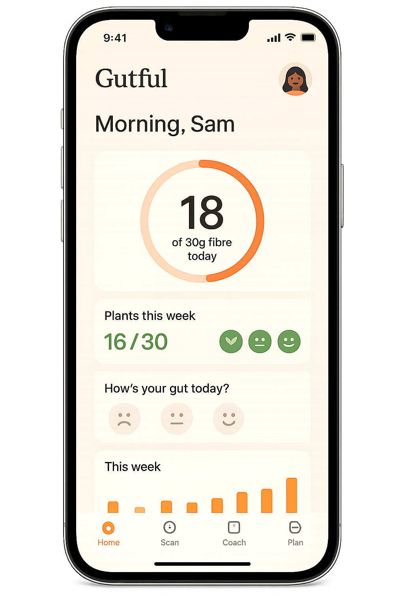
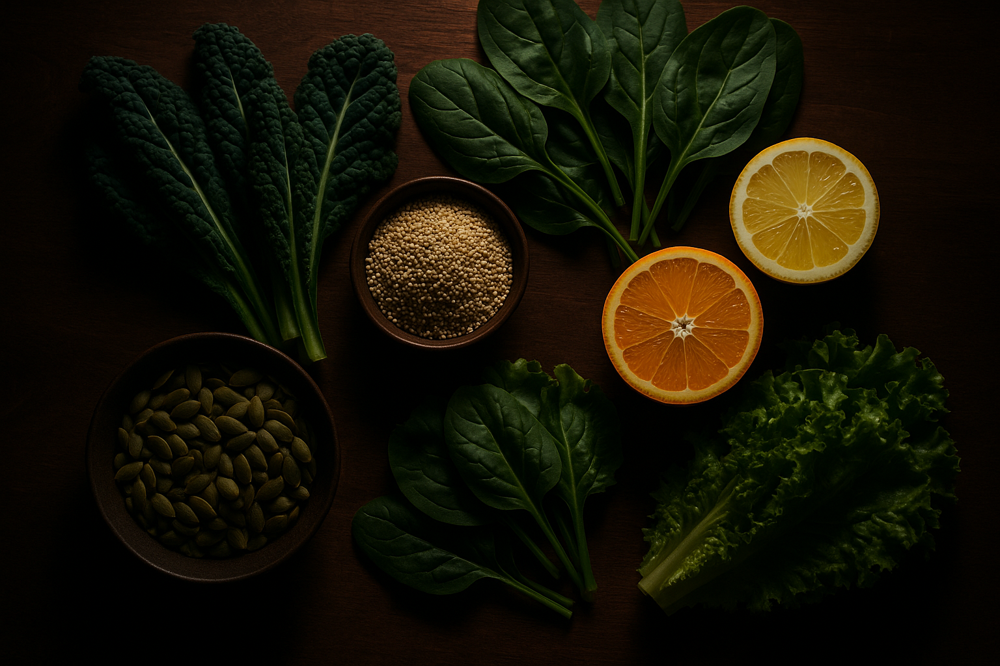
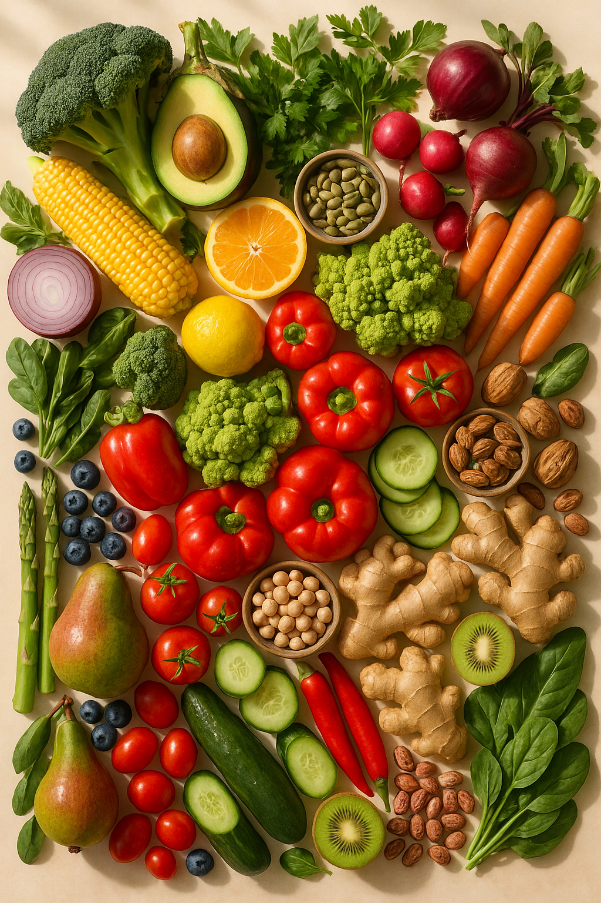
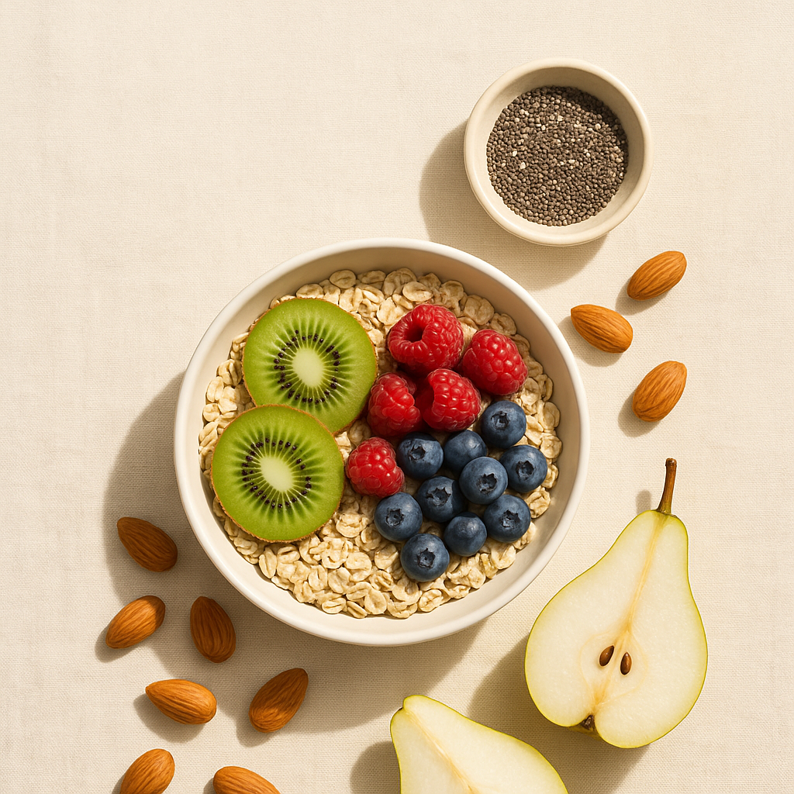
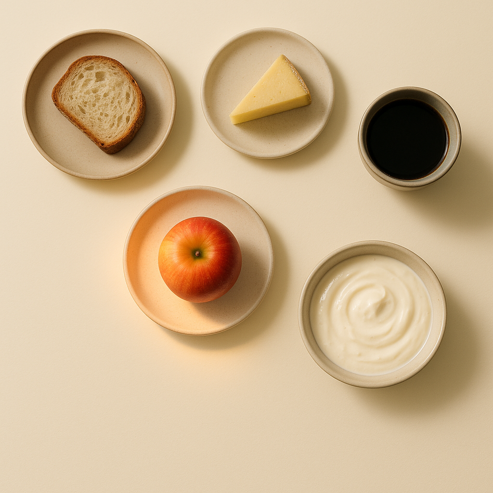

01
Log a meal or scan
Tap once. It does the maths for you.
02
Watch it hit 30g
Your daily fibre target fills as you go.
03
Spot your triggers
The foods that don’t sit right, surfaced over time.
Track your fibre to the daily target, log how you feel, and let your own trigger foods surface over time.
Be one of the first in. We'll email you the moment it opens. No spam, ever.

Tap once. It does the maths for you.
Your daily fibre target fills as you go.
The foods that don’t sit right, surfaced over time.

No fad diets. No guilt. No powder to buy. Just what actually helps your gut.

Log a meal and watch it climb. A pear and a spoon of chia gets you there.

It joins the dots between what you eat and how you feel. Your pattern, not a chart.

The diversity that actually feeds your gut, kept as a simple streak.
Every meal gets a 0-to-100 score from its fibre and plant variety. The method is published in the app, so you can see exactly how it's worked out.
Get early accessFrom a meal-deal sandwich to a proper grain bowl, Gutful scores the food you actually eat.
Get early accessYour gut, finally figured out.
No. It’s evidence-based wellness guidance, not a diagnosis. Always see a doctor about symptoms.
We’re building it now. Join the list and you’ll be first in line when it opens.
First access, founding-member pricing, and a real say in what we build.
Early members get founding-member pricing and first access.
Be one of the first in. We'll email you the moment it opens. No spam, ever.